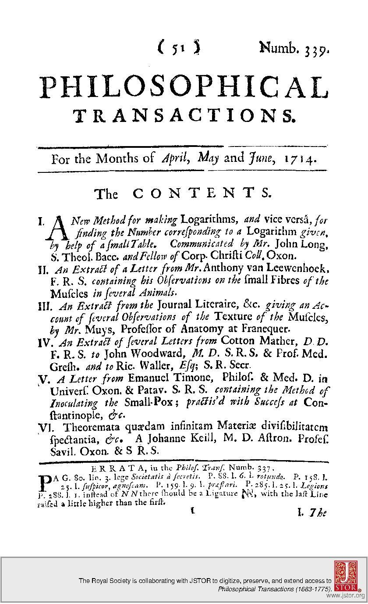

2 Hours

Source: Royal Society of London, http://rstl.royalsocietypublishing.org/
We’ll create our own in the next two days!
The first step in getting this dynmaic document is installing some software
R is a programming language that is especially powerful for data exploration, visualization, and statistical analysis. To interact with R, we use RStudio. For this workshop you’ll need to install both R (version 3.4.3 or newer) and RStudio on your computer.
Install R by downloading and running this .exe file from CRAN. Also, please install the RStudio IDE. Note that if you have separate user and admin accounts, you should run the installers as administrator (right-click on .exe file and select “Run as administrator” instead of double-clicking). Otherwise problems may occur later, for example when installing R packages.
Install R by downloading and running this .pkg file from CRAN. Also, please install the RStudio IDE.
You can download the binary files for your distribution from CRAN. Or you can use your package manager (e.g. for Debian/Ubuntu run sudo apt-get install r-base and for Fedora run sudo dnf install R). Also, please install the RStudio IDE.
You also need to download some files for this workshop:
git clone to copy this repo to your desktopNow open Rstudio (Applications/Rstudio). Rstudio is the development environment where we’ll be working on our document. The main panel you’ll see on the left is the Console, where you can run R code. On the right is two panels - the upper contains your environment (what R can access), and the lower contains the files on your computer.
The first thing to do is install some packages. RStudio makes it easy to install new packages to do things you want. You can find packages by going to the ‘Packages’ tab in the lower right panel. You can install new packages by clicking the Install button and typing in the package name.
For this lesson, we need the following packages:
tidyverseDTrorcidhttpuvNow let’s actually work with a document. Click in the ‘Files’ tab in the lower
right panel of RStudio. Let’s find the DTYourName2018 folder we cloned above. You’ll see
lots of files we will use during this lesson. Double click on
Base_2013_day1_in.Rmd.
You’ll see the document open in a new panel on the left hand side of the screen. In the top section of the document, replace the name with your own and change the date to today.
Knitting is a process in Rstudio that takes a text document and turns it into an output (like html, docx, or html slides). Now click the knit button in the upper left hand corner of the editor. The first time you do this you’ll get a message that you need to install some packages. You’ll want to click Yes and wait for the packages to install. Once the installation you’ll see an interactive demonstration document!
You can output this single file in multiple formats. By default we”ve been’ll be generating .html files, but we can also output to a Word document. If you click on the downward arrow next to the knit button we see some default formats. Click on Word, and a Word document will appear.
While pdf is an option, this requires a TeX distribution which is complex to install and beyond the scope of this course.
You can also select other output forms that aren’t listed in the knitr
dropdown. Take a look at the document. You’ll see in the top a section called
output with sections under it like html_document. If we change the top
output knit will produce a different result. Try replacing word_document
with slidy_presentation. This is a html presentation that you can use in
any web browser.
We’ll continue working on this document to create a reproducible research report !
Next: Basic Markdown